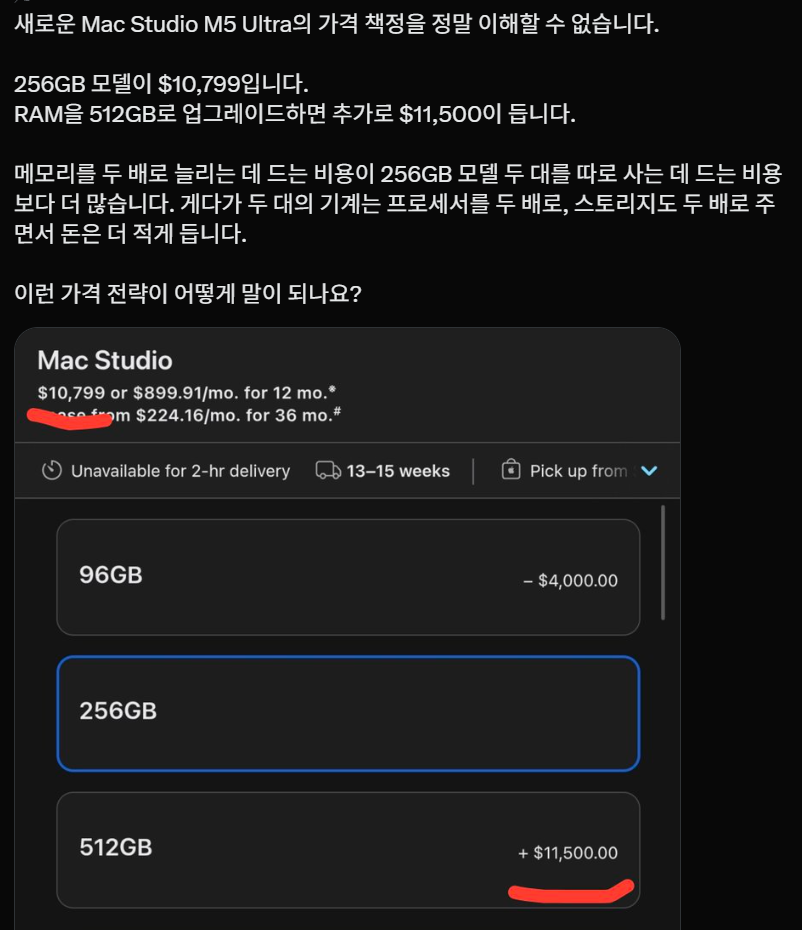

언제나의 애플 아닌가?
엄격 근엄 진지하게 이야기 하자면
이 가격은 니들이 안사면 어쩔 건데? 라는 식의 정책이긴 하지만
가격이 같은 칩을 2배 박는게 아니라서 그런 것도 있음.
96GB 모델: 12GB짜리 단일 칩 × 8개 구성
256GB 모델: 32GB짜리 단일 칩 × 8개 구성
512GB 모델: 64GB짜리 단일 칩 × 8개 구성
이고 32gb 단일칩이랑 64gb 단일칩 가격이 2배만 차이 나는 것도 아니고,
512gb 모델은 cpu도 더 쎈거 들어가고 그런 차이가 있음.


꼬우면 2개사서 쓰시던가 히힛!